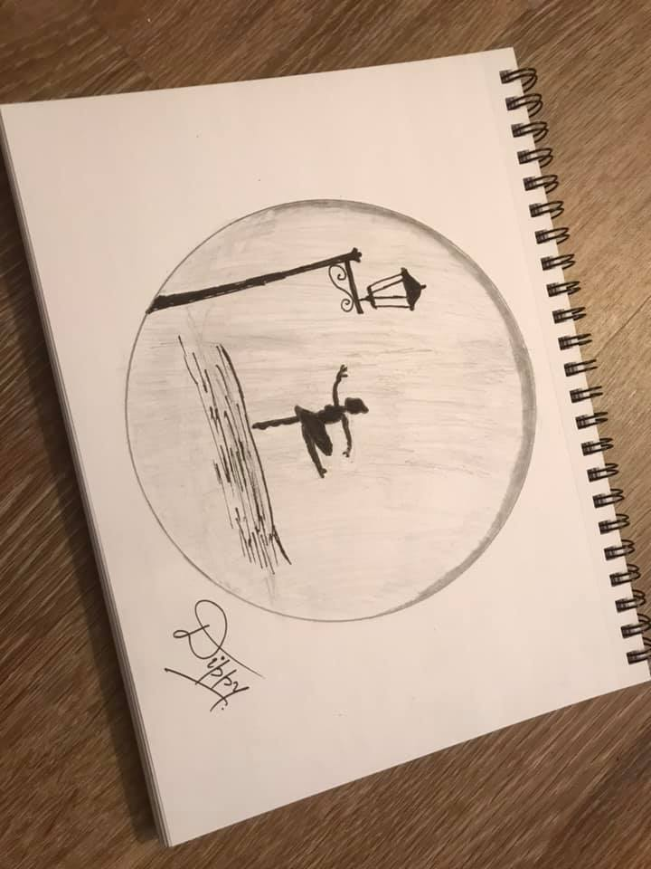
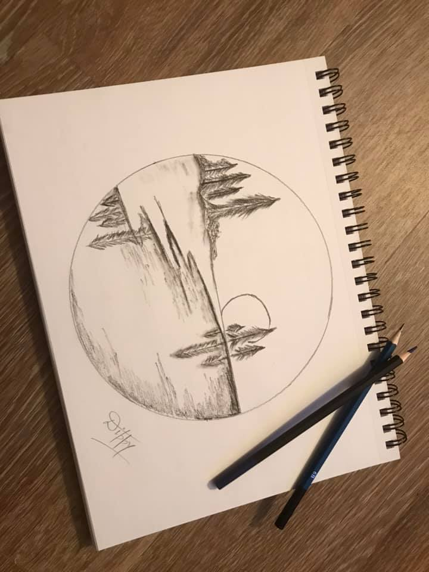
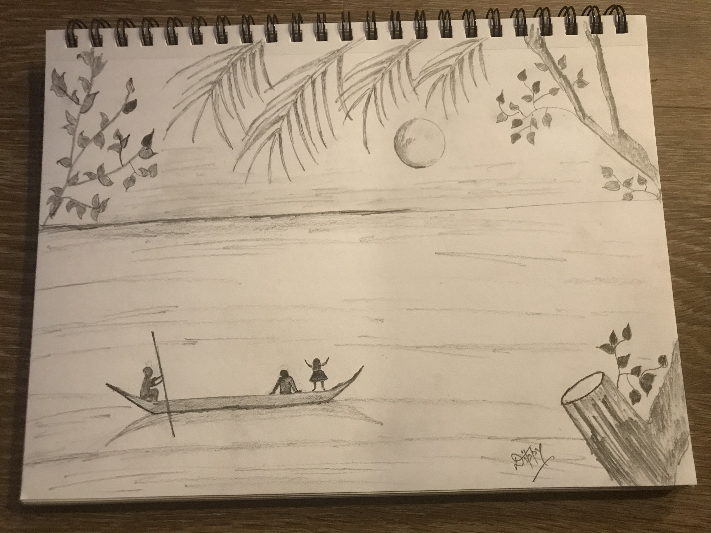
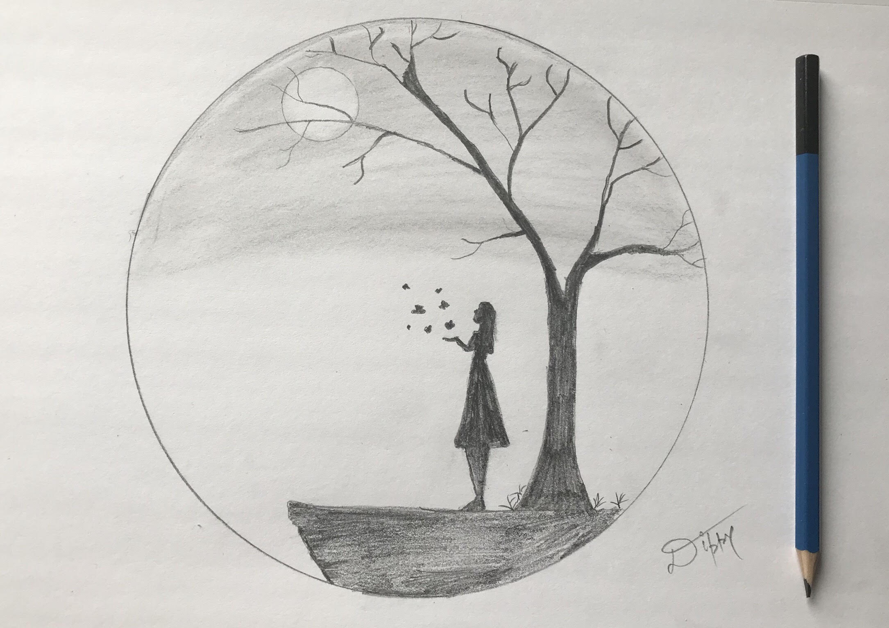
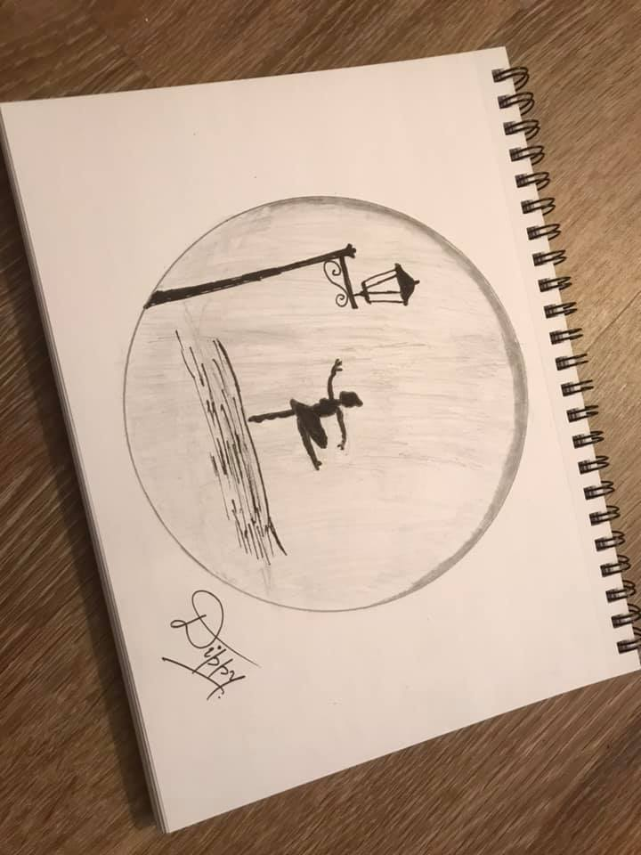
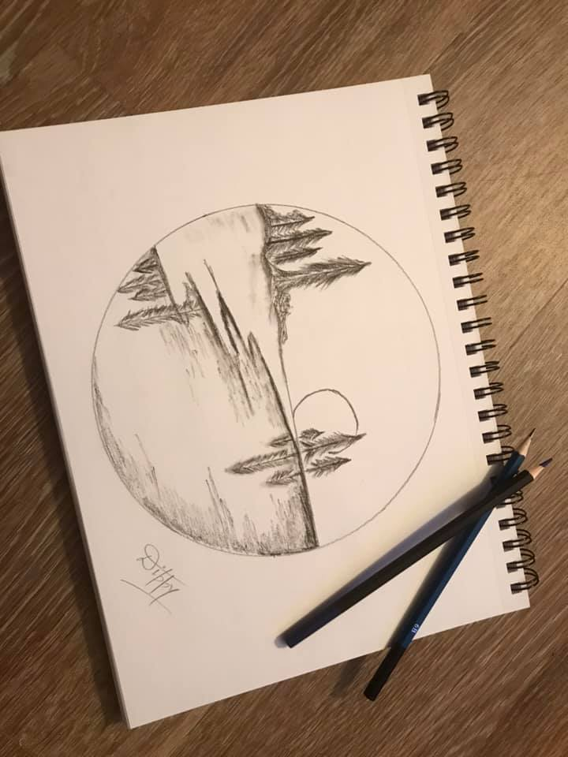
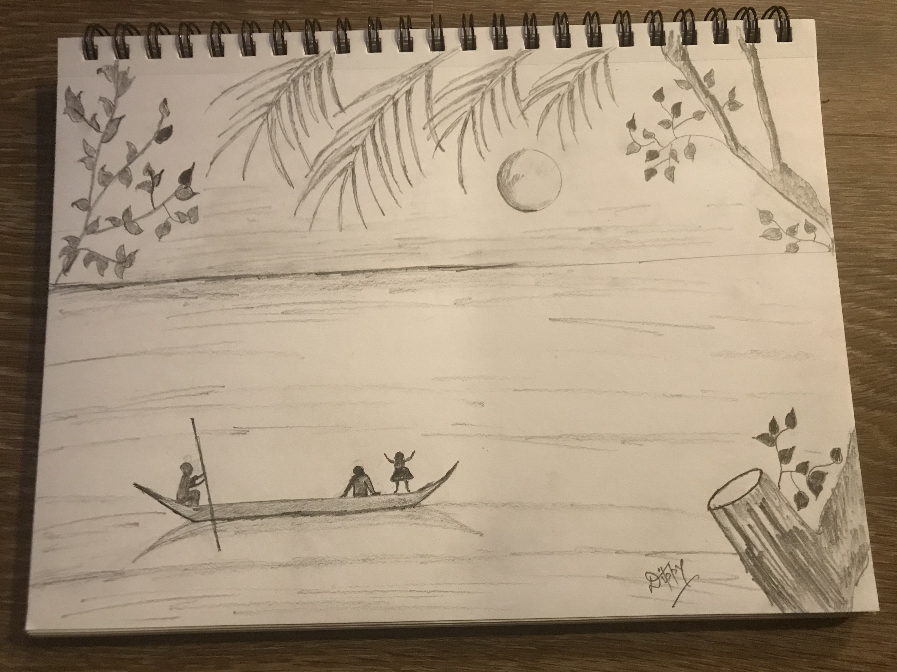
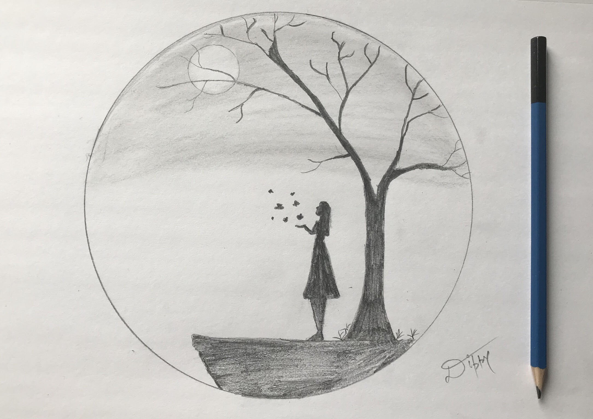

In the inifinite free time I have, I enjoy exploring activities that are not directly connected to my immediate line of work. One of them being volunteering. Participate at various venues as and when as I see open opportunities and depending on my existing commitments. Currently, volunteering with SDE Skills and in the recent past, I have also volunteered to be a tech tutor at KCLS Library
Volunteering@SDESkills/Library
SDESkills is a non-profit, volunteer powered community with 8k+ members. The group was established to help job seekers succeed and excel in the technical interviews for software engineering roles.
I have led following sessions so far.
- Book Club Session (Google Docs: Making Collaboration Fast) - Sept 2, 2020
- Book Club Session(Partitioning) - Sept 11, 2020
- Book club session (Chapter 3)- August 15, 2020
- Backtracking
KCLS Library Last year, I volunteered for the role of tech tutor. Involved having 1:1 sessions in the library for any tech related questions library patrons may have and was also responsible for conducting a few sessions on Microsoft Office.
Paintings/Sketches
 







Books I have read
Planning to add links to some of my favorite books here (non-technical, outside computer science) Stay tuned.